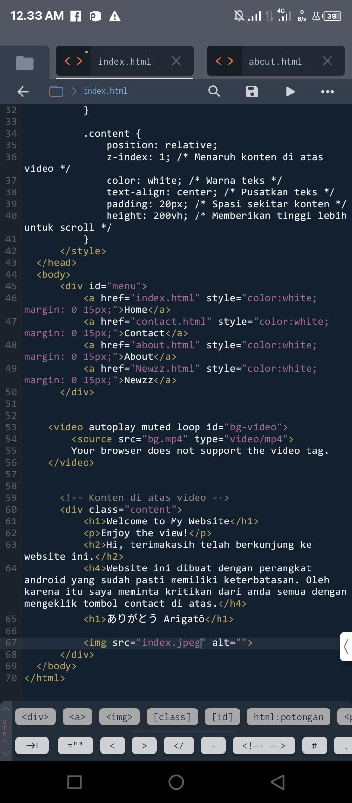

Welcome to My Website
Enjoy the view!
| Hi its your first time? |
Hi, terimakasih telah berkunjung ke website ini.
Website ini dibuat dengan perangkat android yang sudah pasti memiliki keterbatasan. Oleh karena itu saya meminta kritikan dari anda semua dengan mengeklik tombol contact di atas.
ありがとう Arigatō

<!DOCTYPE html>
<html>
<head>
<meta name="viewport" content="width=device-width, initial-scale=1.0">
<title>JtnXngWebsit</title>
<style>
/* CSS untuk video background */
body, html {
margin: 0;
padding: 0;
height: 100%; /* Memastikan tinggi penuh */
overflow: hidden; /* Menghindari scroll pada halaman utama */
}
#menu {
position: fixed;
z-index: 2; /* Pastikan menu di atas video */
width: 100%; /* Mengatur lebar menu */
text-align: center; /* Pusatkan teks dalam menu */
background-color: rgba(0, 0, 0, 0.5); /* Latar belakang semi-transparan */
padding: 10px 0; /* Spasi atas dan bawah */
}
#bg-video {
position: fixed; /* Video tetap pada posisi tetap */
top: 0; /* Menempatkan video di atas */
left: 0; /* Menempatkan video di kiri */
width: 100%; /* Memastikan video memenuhi lebar */
height: 100%; /* Memastikan video memenuhi tinggi */
object-fit: cover; /* Mengatur video agar tidak terdistorsi */
z-index: -1; /* Menaruh video di belakang konten */
}
.content {
position: relative;
z-index: 1; /* Menaruh konten di atas video */
color: white; /* Warna teks */
text-align: center; /* Pusatkan teks */
padding: 20px; /* Spasi sekitar konten */
height: 100%; /* Mengatur tinggi konten agar sesuai dengan tinggi viewport */
overflow-y: auto; /* Tambahkan scroll vertikal jika diperlukan */
}
#tutor {
margin: 20px 0; /* Spasi atas dan bawah untuk gambar */
width: 100%; /* Sesuaikan lebar gambar */
max-width: 600px; /* Atur lebar maksimum untuk gambar */
height: auto; /* Sesuaikan tinggi gambar */
}
</style>
</head>
<body>
<div id="menu">
<a href="index.html" style="color:white; margin: 0 15px;">Home</a>
<a href="contact.html" style="color:white; margin: 0 15px;">Contact</a>
<a href="about.html" style="color:white; margin: 0 15px;">About</a>
<a href="Newzz.html" style="color:white; margin: 0 15px;">Newzz</a>
</div>
<video autoplay muted loop id="bg-video">
<source src="bg.mp4" type="video/mp4">
Your browser does not support the video tag.
</video>
<div class="content">
<h1>Welcome to My Website</h1>
<p>Enjoy the view!</p>
<h2>Hi, terimakasih telah berkunjung ke website ini.</h2>
<h4>Website ini dibuat dengan perangkat android yang sudah pasti memiliki keterbatasan. Oleh karena itu saya meminta kritikan dari anda semua dengan mengeklik tombol contact di atas.</h4>
<h1>ありがとう Arigatō</h1>
<img id="tutor" src="index.jpeg" alt="">
</div>
</body>
</html>